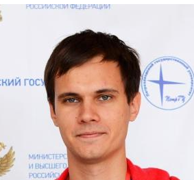

Conquer the code, master the competition.

Gennady Korotkevich is a Belarussian competitive programmer,
also known by his alias Tourist.
Gennady has won major international competitions since the age of 11,
as well as numerous national competitions.
His top accomplishments include six consecutive gold medals in the International Olympiad in Informatics
as well as the world championship in the 2013 and 2015 International Collegiate Programming Contest World Finals.
As of October 2023, Gennady was the highest-rated programmer on Codeforces, CodeChef, Topcoder, AtCoder and HackerRank.
In January 2022, he achieved a historic rating of 3979 on Codeforces, becoming the first to break the 3900 barrier.
His current rating is 3843 and he uses C++ 20 to solve his programming problems.
At this time, he's studying for his PhD in ITMO, one of Russia's top universities.
William Lin is a competitive programmer from Taiwan,
known by the alias twilliamlin168.
William gained significant popularity during the COVID period,
through his YouTube channel and especially this video: Winning Google Kickstart Round A 2020 + Facecam
where he won the first round of Google's Kickstart competition within 16 minutes!
Other accomplishments include William being 2nd place in 2019 International Olympiad of Informatics (IOI)
1st place in 2020 IOI and having a Grandmaster rank in every Competitive Programming website.
His current rating is 2931 (International Grandmaster) in Codeforces and 2916 (7 stars) in Codechef.
He also uses C++ 20 to solve programming problems.
William is, at this time, studying for his MEng in Electrical Engineering and Computer Science at MIT.
Below, we will be presenting several visualizations regarding problem solutions.
The first visualization shows a Bubble chart with the number of accepted solutions for each difficulty level in Codechef.
The result is, as expected, that the hardest level (challenge) solutions are the fewest in number due to the problems' difficulty
and the most accepted solutions are in the easy difficulty.
This means that users who are probably new to Competitive Programming do not go to beginner problems
as much and instead opt for something harder, to keep both the enjoyability of writing code
and simultaneously learning new ways to solve problems
without burning their brains out.